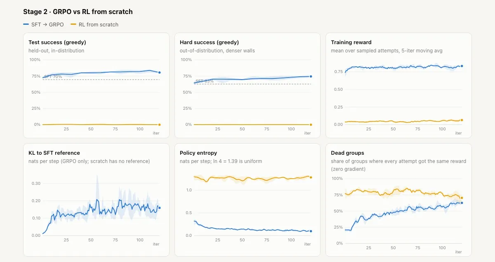

2026 · toy maze, 3 seeds
Post Training Lab
A 59k-parameter transformer learns a maze by SFT, then GRPO and DPO lift held-out success from 70% to 80% and 81% over 3 seeds.
Live demo: race the checkpoints → Code and write-up on GitHub →
The question
Can post-training fix a habit a model picked up from flawed demonstrations? Supervised fine-tuning (SFT) copies the demonstrations, habit included. GRPO and DPO are two ways to fix it afterwards. A third run checks the classic failure: a model that learns to game a subtly wrong reward.
Setup
Key & Door: a 7×7 grid with a wall and a locked door. The key is on the agent’s side and the goal is across, and the true reward is 1 − 0.01 × steps on success, within 30 steps. The model is a tiny transformer, about 59k parameters (3 layers, 4 heads, width 48), that reads 26 tokens and picks one of 4 moves.
The demonstrations come from a planner that 80% of the time walks straight at its target instead of planning: the habit to fix. GRPO is online RL, trying each level 8 times and pushing towards the attempts that beat the group’s average. DPO is offline, learning from pairs of a better and a worse attempt. Scoring uses 150 test levels and 150 harder ones with denser walls, all kept out of training.
How it works
- Planner demos with a bad habit
- SFT: copy the demos
- GRPO from SFT, kept close to it
- DPO on SFT samples, same budget
- Controls: a reward hacker, RL from scratch
- Score on test and harder levels
Results
Means over 3 seeds on the 150 test levels: SFT 69.6%, GRPO 80.4%, DPO with an NLL term 81.3%. On the harder levels: 62.7%, 74.4% and 72.9%. Plain DPO collapsed (16.0%) until the NLL term was added. RL from scratch never solved a level.
The reward hacker, trained on a proxy that pays for getting closer to the goal each step with walls ignored, pushed its proxy score from about 0.26 to 0.58 within about 10 iterations, while its true success fell to 6.9%.

What didn’t work
Three seeds, so the bands show best and worst seed, not a confidence interval. The eval sets are small (150 levels each), so one level is worth about 0.7 points of success. The harder split only varies wall density: a mild shift, not a new task.
DPO and the reward hacker use settings picked from one short trial each. Along the way, uniform label noise (greedy decoding just removed it), a 9×9 grid (too noisy to train on a CPU) and plain DPO all failed.
What’s next
Test whether GRPO’s lead over SFT holds on a real distribution shift, such as new layouts or a bigger grid, not just denser walls.